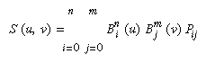
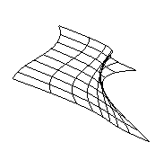
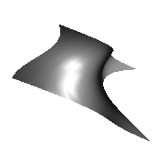
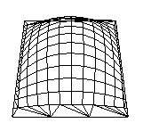
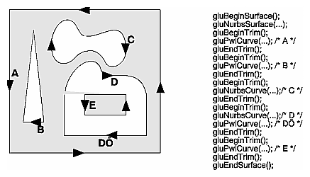
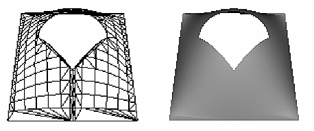

Chapter 12
|
|
Parameter |
Meaning |
|
GL_MAP1_VERTEX_3 |
x, y, z vertex coordinates |
|
GL_MAP1_VERTEX_4 |
x, y, z, w vertex coordinates |
|
GL_MAP1_INDEX |
color index |
|
GL_MAP1_COLOR_4 |
R, G, B, A |
|
GL_MAP1_NORMAL |
normal coordinates |
|
GL_MAP1_TEXTURE_COORD_1 |
s texture coordinates |
|
GL_MAP1_TEXTURE_COORD_2 |
s, t texture coordinates |
|
GL_MAP1_TEXTURE_COORD_3 |
s, t, r texture coordinates |
|
GL_MAP1_TEXTURE_COORD_4 |
s, t, r, q texture coordinates |
More than one evaluator can be evaluated at a time. If you have both a GL_MAP1_VERTEX_3 and a GL_MAP1_COLOR_4 evaluator defined and enabled, for example, then calls to glEvalCoord1() generate both a position and a color. Only one of the vertex evaluators can be enabled at a time, although you might have defined both of them. Similarly, only one of the texture evaluators can be active. Other than that, however, evaluators can be used to generate any combination of vertex, normal, color, and texture-coordinate data. If more than one evaluator of the same type is defined and enabled, the one of highest dimension is used.
Use glEvalCoord1*() to evaluate a defined and enabled one-dimensional map.
- void glEvalCoord1{fd}(
void glEvalCoord1{fd}v(TYPE *u);
For evaluated vertices, values for color, color index, normal vectors, and texture coordinates are generated by evaluation. Calls to glEvalCoord*() do not use the current values for color, color index, normal vectors, and texture coordinates. glEvalCoord*() also leaves those values unchanged.
Defining Evenly Spaced Coordinate Values in One Dimension
You can use glEvalCoord1() with any values for u, but by far the most common use is with evenly spaced values, as shown previously in Example 12-1. To obtain evenly spaced values, define a one-dimensional grid using glMapGrid1*() and then apply it using glEvalMesh1().
- void glMapGrid1{fd}(GLint
glBegin(GL_POINTS); /* OR glBegin(GL_LINE_STRIP); */ for (i = p1; i <= p2; i++)
glEvalCoord1(u1 + i*(u2-u1)/n);
glEnd();
- except that if
Two-Dimensional Evaluators
In two dimensions, everything is similar to the one-dimensional case, except that all the commands must take two parameters, u and v, into account. Points, colors, normals, or texture coordinates must be supplied over a surface instead of a curve. Mathematically, the definition of a Bezier surface patch is given by

where Pij are a set of m*n control points, and the Bi are the same Bernstein polynomials for one dimension. As before, the Pij can represent vertices, normals, colors, or texture coordinates.
The procedure to use two-dimensional evaluators is similar to the procedure for one dimension.
Define the evaluator(s) with glMap2*().
Enable them by passing the appropriate value to glEnable().
Invoke them either by calling glEvalCoord2() between a glBegin() and glEnd() pair or by specifying and then applying a mesh with glMapGrid2() and glEvalMesh2().
Defining and Evaluating a Two-Dimensional Evaluator
Use glMap2*() and glEvalCoord2*() to define and then invoke a two-dimensional evaluator.
- void glMap2{fd}(GLenum
GLint uorder, TYPEv1, TYPEv2, GLint vstride,
GLint vorder, TYPE points);
GLfloat ctlpoints[100][100][3];
and you want to use the 4x4 subset beginning at ctlpoints[20][30], choose
void glEvalCoord2{fd}v(TYPE *values);
Two-Dimensional Example: A Bezier Surface
Example 12-2 draws a wireframe Bezier surface using evaluators, as shown in Figure 12-2. In this example, the surface is drawn with nine curved lines in each direction. Each curve is drawn as 30 segments. To get the whole program, add the reshape() and main() routines from Example 12-1.

Figure 12-2 : Bezier Surface
Example 12-2 : Bezier Surface: bezsurf.c
#include <GL/gl.h>
#include <GL/glu.h>
#include <stdlib.h>
#include <GL/glut.h>
GLfloat ctrlpoints[4][4][3] = {
{{-1.5, -1.5, 4.0}, {-0.5, -1.5, 2.0},
{0.5, -1.5, -1.0}, {1.5, -1.5, 2.0}},
{{-1.5, -0.5, 1.0}, {-0.5, -0.5, 3.0},
{0.5, -0.5, 0.0}, {1.5, -0.5, -1.0}},
{{-1.5, 0.5, 4.0}, {-0.5, 0.5, 0.0},
{0.5, 0.5, 3.0}, {1.5, 0.5, 4.0}},
{{-1.5, 1.5, -2.0}, {-0.5, 1.5, -2.0},
{0.5, 1.5, 0.0}, {1.5, 1.5, -1.0}}
};
void display(void)
{
int i, j;
glClear(GL_COLOR_BUFFER_BIT | GL_DEPTH_BUFFER_BIT);
glColor3f(1.0, 1.0, 1.0);
glPushMatrix ();
glRotatef(85.0, 1.0, 1.0, 1.0);
for (j = 0; j <= 8; j++) {
glBegin(GL_LINE_STRIP);
for (i = 0; i <= 30; i++)
glEvalCoord2f((GLfloat)i/30.0, (GLfloat)j/8.0);
glEnd();
glBegin(GL_LINE_STRIP);
for (i = 0; i <= 30; i++)
glEvalCoord2f((GLfloat)j/8.0, (GLfloat)i/30.0);
glEnd();
}
glPopMatrix ();
glFlush();
}
void init(void)
{
glClearColor (0.0, 0.0, 0.0, 0.0);
glMap2f(GL_MAP2_VERTEX_3, 0, 1, 3, 4,
0, 1, 12, 4, &ctrlpoints[0][0][0]);
glEnable(GL_MAP2_VERTEX_3);
glMapGrid2f(20, 0.0, 1.0, 20, 0.0, 1.0);
glEnable(GL_DEPTH_TEST);
glShadeModel(GL_FLAT);
}
Defining Evenly Spaced Coordinate Values in Two Dimensions
In two dimensions, the glMapGrid2*() and glEvalMesh2() commands are similar to the one-dimensional versions, except that both u and v information must be included.
- void glMapGrid2{fd}(GLint
GLint nv, TYPEv1, TYPEv2);
void glEvalMesh2(GLenum mode, GLint i1, GLint i2, GLint j1, GLint j2);
glBegin(GL_POINTS); /* mode == GL_POINT */
for (i = nu1; i <= nu2; i++)
for (j = nv1; j <= nv2; j++)
glEvalCoord2(u1 + i*(u2-u1)/nu, v1+j*(v2-v1)/nv);
glEnd();
or
for (i = nu1; i <= nu2; i++) { /* mode == GL_LINE */
glBegin(GL_LINES);
for (j = nv1; j <= nv2; j++)
glEvalCoord2(u1 + i*(u2-u1)/nu, v1+j*(v2-v1)/nv);
glEnd();
}
for (j = nv1; j <= nv2; j++) {
glBegin(GL_LINES);
for (i = nu1; i <= nu2; i++)
glEvalCoord2(u1 + i*(u2-u1)/nu, v1+j*(v2-v1)/nv);
glEnd();
}
or
for (i = nu1; i < nu2; i++) { /* mode == GL_FILL */
glBegin(GL_QUAD_STRIP);
for (j = nv1; j <= nv2; j++) {
glEvalCoord2(u1 + i*(u2-u1)/nu, v1+j*(v2-v1)/nv);
glEvalCoord2(u1 + (i+1)*(u2-u1)/nu, v1+j*(v2-v1)/nv);
glEnd();
}
Example 12-3 shows the differences necessary to draw the same Bezier surface as Example 12-2, but using glMapGrid2() and glEvalMesh2() to subdivide the square domain into a uniform 8x8 grid. This program also adds lighting and shading, as shown in Figure 12-3.

Figure 12-3 : Lit, Shaded Bezier Surface Drawn with a Mesh
Example 12-3 : Lit, Shaded Bezier Surface Using a Mesh: bezmesh.c
void initlights(void)
{
GLfloat ambient[] = {0.2, 0.2, 0.2, 1.0};
GLfloat position[] = {0.0, 0.0, 2.0, 1.0};
GLfloat mat_diffuse[] = {0.6, 0.6, 0.6, 1.0};
GLfloat mat_specular[] = {1.0, 1.0, 1.0, 1.0};
GLfloat mat_shininess[] = {50.0};
glEnable(GL_LIGHTING);
glEnable(GL_LIGHT0);
glLightfv(GL_LIGHT0, GL_AMBIENT, ambient);
glLightfv(GL_LIGHT0, GL_POSITION, position);
glMaterialfv(GL_FRONT, GL_DIFFUSE, mat_diffuse);
glMaterialfv(GL_FRONT, GL_SPECULAR, mat_specular);
glMaterialfv(GL_FRONT, GL_SHININESS, mat_shininess);
}
void display(void)
{
glClear(GL_COLOR_BUFFER_BIT | GL_DEPTH_BUFFER_BIT);
glPushMatrix();
glRotatef(85.0, 1.0, 1.0, 1.0);
glEvalMesh2(GL_FILL, 0, 20, 0, 20);
glPopMatrix();
glFlush();
}
void init(void)
{
glClearColor(0.0, 0.0, 0.0, 0.0);
glEnable(GL_DEPTH_TEST);
glMap2f(GL_MAP2_VERTEX_3, 0, 1, 3, 4,
0, 1, 12, 4, &ctrlpoints[0][0][0]);
glEnable(GL_MAP2_VERTEX_3);
glEnable(GL_AUTO_NORMAL);
glMapGrid2f(20, 0.0, 1.0, 20, 0.0, 1.0);
initlights();
}
Using Evaluators for Textures
Example 12-4 enables two evaluators at the same time: The first generates three-dimensional points on the same Bezier surface as Example 12-3, and the second generates texture coordinates. In this case, the texture coordinates are the same as the u and v coordinates of the surface, but a special flat Bezier patch must be created to do this.
The flat patch is defined over a square with corners at (0, 0), (0, 1), (1, 0), and (1, 1); it generates (0, 0) at corner (0, 0), (0, 1) at corner (0, 1), and so on. Since it's of order two (linear degree plus one), evaluating this texture at the point (u, v) generates texture coordinates (s, t). It's enabled at the same time as the vertex evaluator, so both take effect when the surface is drawn. (See "Plate 19" in Appendix I.) If you want the texture to repeat three times in each direction, change every 1.0 in the array texpts[][][] to 3.0. Since the texture wraps in this example, the surface is rendered with nine copies of the texture map.
Example 12-4 : Using Evaluators for Textures: texturesurf.c
#include <GL/gl.h>
#include <GL/glu.h>
#include <stdlib.h>
#include <GL/glut.h>
#include <math.h>
GLfloat ctrlpoints[4][4][3] = {
{{ -1.5, -1.5, 4.0}, { -0.5, -1.5, 2.0},
{0.5, -1.5, -1.0}, {1.5, -1.5, 2.0}},
{{ -1.5, -0.5, 1.0}, { -0.5, -0.5, 3.0},
{0.5, -0.5, 0.0}, {1.5, -0.5, -1.0}},
{{ -1.5, 0.5, 4.0}, { -0.5, 0.5, 0.0},
{0.5, 0.5, 3.0}, {1.5, 0.5, 4.0}},
{{ -1.5, 1.5, -2.0}, { -0.5, 1.5, -2.0},
{0.5, 1.5, 0.0}, {1.5, 1.5, -1.0}}
};
GLfloat texpts[2][2][2] = {{{0.0, 0.0}, {0.0, 1.0}},
{{1.0, 0.0}, {1.0, 1.0}}};
void display(void)
{
glClear(GL_COLOR_BUFFER_BIT | GL_DEPTH_BUFFER_BIT);
glColor3f(1.0, 1.0, 1.0);
glEvalMesh2(GL_FILL, 0, 20, 0, 20);
glFlush();
}
#define imageWidth 64
#define imageHeight 64
GLubyte image[3*imageWidth*imageHeight];
void makeImage(void)
{
int i, j;
float ti, tj;
for (i = 0; i < imageWidth; i++) {
ti = 2.0*3.14159265*i/imageWidth;
for (j = 0; j < imageHeight; j++) {
tj = 2.0*3.14159265*j/imageHeight;
image[3*(imageHeight*i+j)] =
(GLubyte) 127*(1.0+sin(ti));
image[3*(imageHeight*i+j)+1] =
(GLubyte) 127*(1.0+cos(2*tj));
image[3*(imageHeight*i+j)+2] =
(GLubyte) 127*(1.0+cos(ti+tj));
}
}
}
void init(void)
{
glMap2f(GL_MAP2_VERTEX_3, 0, 1, 3, 4,
0, 1, 12, 4, &ctrlpoints[0][0][0]);
glMap2f(GL_MAP2_TEXTURE_COORD_2, 0, 1, 2, 2,
0, 1, 4, 2, &texpts[0][0][0]);
glEnable(GL_MAP2_TEXTURE_COORD_2);
glEnable(GL_MAP2_VERTEX_3);
glMapGrid2f(20, 0.0, 1.0, 20, 0.0, 1.0);
makeImage();
glTexEnvf(GL_TEXTURE_ENV, GL_TEXTURE_ENV_MODE, GL_DECAL);
glTexParameteri(GL_TEXTURE_2D, GL_TEXTURE_WRAP_S, GL_REPEAT);
glTexParameteri(GL_TEXTURE_2D, GL_TEXTURE_WRAP_T, GL_REPEAT);
glTexParameteri(GL_TEXTURE_2D, GL_TEXTURE_MAG_FILTER,
GL_NEAREST);
glTexParameteri(GL_TEXTURE_2D, GL_TEXTURE_MIN_FILTER,
GL_NEAREST);
glTexImage2D(GL_TEXTURE_2D, 0, 3, imageWidth, imageHeight, 0,
GL_RGB, GL_UNSIGNED_BYTE, image);
glEnable(GL_TEXTURE_2D);
glEnable(GL_DEPTH_TEST);
glShadeModel (GL_FLAT);
}
void reshape(int w, int h)
{
glViewport(0, 0, (GLsizei) w, (GLsizei) h);
glMatrixMode(GL_PROJECTION);
glLoadIdentity();
if (w <= h)
glOrtho(-4.0, 4.0, -4.0*(GLfloat)h/(GLfloat)w,
4.0*(GLfloat)h/(GLfloat)w, -4.0, 4.0);
else
glOrtho(-4.0*(GLfloat)w/(GLfloat)h,
4.0*(GLfloat)w/(GLfloat)h, -4.0, 4.0, -4.0, 4.0);
glMatrixMode(GL_MODELVIEW);
glLoadIdentity();
glRotatef(85.0, 1.0, 1.0, 1.0);
}
int main(int argc, char** argv)
{
glutInit(&argc, argv);
glutInitDisplayMode (GLUT_SINGLE | GLUT_RGB | GLUT_DEPTH);
glutInitWindowSize (500, 500);
glutInitWindowPosition (100, 100);
glutCreateWindow (argv[0]);
init ();
glutDisplayFunc(display);
glutReshapeFunc(reshape);
glutMainLoop();
return 0;
}
The GLU NURBS Interface
Although evaluators are the only OpenGL primitive available to draw curves and surfaces directly, and even though they can be implemented very efficiently in hardware, they're often accessed by applications through higher-level libraries. The GLU provides a NURBS (Non-Uniform Rational B-Spline) interface built on top of the OpenGL evaluator commands.
A Simple NURBS Example
If you understand NURBS, writing OpenGL code to manipulate NURBS curves and surfaces is relatively easy, even with lighting and texture mapping. Follow these steps to draw NURBS curves or untrimmed NURBS surfaces. (See "Trim a NURBS Surface" for information about trimmed surfaces.)
If you intend to use lighting with a NURBS surface, call glEnable() with GL_AUTO_NORMAL to automatically generate surface normals. (Or you can calculate your own.)
Use gluNewNurbsRenderer() to create a pointer to a NURBS object, which is referred to when creating your NURBS curve or surface.
If desired, call gluNurbsProperty() to choose rendering values, such as the maximum size of lines or polygons that are used to render your NURBS object.
Call gluNurbsCallback() if you want to be notified when an error is encountered. (Error checking may slightly degrade performance but is still highly recommended.)
Start your curve or surface by calling gluBeginCurve() or gluBeginSurface().
Generate and render your curve or surface. Call gluNurbsCurve() or gluNurbsSurface() at least once with the control points (rational or nonrational), knot sequence, and order of the polynomial basis function for your NURBS object. You might call these functions additional times to specify surface normals and/or texture coordinates.
Call gluEndCurve() or gluEndSurface() to complete the curve or surface.
Example 12-5 renders a NURBS surface in the shape of a symmetrical hill with control points ranging from -3.0 to 3.0. The basis function is a cubic B-spline, but the knot sequence is nonuniform, with a multiplicity of 4 at each endpoint, causing the basis function to behave like a Bezier curve in each direction. The surface is lighted, with a dark gray diffuse reflection and white specular highlights. Figure 12-4 shows the surface as a lit wireframe.

Figure 12-4 : NURBS Surface
Example 12-5 : NURBS Surface: surface.c
#include <GL/gl.h>
#include <GL/glu.h>
#include <GL/glut.h>
#include <stdlib.h>
#include <stdio.h>
GLfloat ctlpoints[4][4][3];
int showPoints = 0;
GLUnurbsObj *theNurb;
void init_surface(void)
{
int u, v;
for (u = 0; u < 4; u++) {
for (v = 0; v < 4; v++) {
ctlpoints[u][v][0] = 2.0*((GLfloat)u - 1.5);
ctlpoints[u][v][1] = 2.0*((GLfloat)v - 1.5);
if ( (u == 1 || u == 2) && (v == 1 || v == 2))
ctlpoints[u][v][2] = 3.0;
else
ctlpoints[u][v][2] = -3.0;
}
}
}
void nurbsError(GLenum errorCode)
{
const GLubyte *estring;
estring = gluErrorString(errorCode);
fprintf (stderr, "Nurbs Error: %s\n", estring);
exit (0);
}
void init(void)
{
GLfloat mat_diffuse[] = { 0.7, 0.7, 0.7, 1.0 };
GLfloat mat_specular[] = { 1.0, 1.0, 1.0, 1.0 };
GLfloat mat_shininess[] = { 100.0 };
glClearColor (0.0, 0.0, 0.0, 0.0);
glMaterialfv(GL_FRONT, GL_DIFFUSE, mat_diffuse);
glMaterialfv(GL_FRONT, GL_SPECULAR, mat_specular);
glMaterialfv(GL_FRONT, GL_SHININESS, mat_shininess);
glEnable(GL_LIGHTING);
glEnable(GL_LIGHT0);
glEnable(GL_DEPTH_TEST);
glEnable(GL_AUTO_NORMAL);
glEnable(GL_NORMALIZE);
init_surface();
theNurb = gluNewNurbsRenderer();
gluNurbsProperty(theNurb, GLU_SAMPLING_TOLERANCE, 25.0);
gluNurbsProperty(theNurb, GLU_DISPLAY_MODE, GLU_FILL);
gluNurbsCallback(theNurb, GLU_ERROR,
(GLvoid (*)()) nurbsError);
}
void display(void)
{
GLfloat knots[8] = {0.0, 0.0, 0.0, 0.0, 1.0, 1.0, 1.0, 1.0};
int i, j;
glClear(GL_COLOR_BUFFER_BIT | GL_DEPTH_BUFFER_BIT);
glPushMatrix();
glRotatef(330.0, 1.,0.,0.);
glScalef (0.5, 0.5, 0.5);
gluBeginSurface(theNurb);
gluNurbsSurface(theNurb,
8, knots, 8, knots,
4 * 3, 3, &ctlpoints[0][0][0],
4, 4, GL_MAP2_VERTEX_3);
gluEndSurface(theNurb);
if (showPoints) {
glPointSize(5.0);
glDisable(GL_LIGHTING);
glColor3f(1.0, 1.0, 0.0);
glBegin(GL_POINTS);
for (i = 0; i < 4; i++) {
for (j = 0; j < 4; j++) {
glVertex3f(ctlpoints[i][j][0],
ctlpoints[i][j][1], ctlpoints[i][j][2]);
}
}
glEnd();
glEnable(GL_LIGHTING);
}
glPopMatrix();
glFlush();
}
void reshape(int w, int h)
{
glViewport(0, 0, (GLsizei) w, (GLsizei) h);
glMatrixMode(GL_PROJECTION);
glLoadIdentity();
gluPerspective (45.0, (GLdouble)w/(GLdouble)h, 3.0, 8.0);
glMatrixMode(GL_MODELVIEW);
glLoadIdentity();
glTranslatef (0.0, 0.0, -5.0);
}
void keyboard(unsigned char key, int x, int y)
{
switch (key) {
case `c':
case `C':
showPoints = !showPoints;
glutPostRedisplay();
break;
case 27:
exit(0);
break;
default:
break;
}
}
int main(int argc, char** argv)
{
glutInit(&argc, argv);
glutInitDisplayMode(GLUT_SINGLE | GLUT_RGB | GLUT_DEPTH);
glutInitWindowSize (500, 500);
glutInitWindowPosition (100, 100);
glutCreateWindow(argv[0]);
init();
glutReshapeFunc(reshape);
glutDisplayFunc(display);
glutKeyboardFunc (keyboard);
glutMainLoop();
return 0;
}
Manage a NURBS Object
As shown in Example 12-5, gluNewNurbsRenderer() returns a new NURBS object, whose type is a pointer to a GLUnurbsObj structure. You must make this object before using any other NURBS routine. When you're done with a NURBS object, you may use gluDeleteNurbsRenderer() to free up the memory that was used.
- GLUnurbsObj* gluNewNurbsRenderer (void);
Control NURBS Rendering Properties
A set of properties associated with a NURBS object affects the way the object is rendered. These properties include how the surface is rasterized (for example, filled or wireframe) and the precision of tessellation.
- void gluNurbsProperty(GLUnurbsObj *
GLfloat value);
If you need to query the current value for a NURBS property, you may use gluGetNurbsProperty().
- void gluGetNurbsProperty (GLUnurbsObj
GLfloat *value);
Handle NURBS Errors
Since there are 37 different errors specific to NURBS functions, it's a good idea to register an error callback to let you know if you've stumbled into one of them. In Example 12-5, the callback function was registered with
gluNurbsCallback(theNurb, GLU_ERROR, (GLvoid (*)()) nurbsError);
- void gluNurbsCallback (GLUnurbsObj *
void (*fn)(GLenum errorCode));
In Example 12-5, the nurbsError() routine was registered as the error callback function:
void nurbsError(GLenum errorCode)
{
const GLubyte *estring;
estring = gluErrorString(errorCode);
fprintf (stderr, "Nurbs Error: %s\n", estring);
exit (0);
}
Create a NURBS Curve or Surface
To render a NURBS surface, gluNurbsSurface() is bracketed by gluBeginSurface() and gluEndSurface(). The bracketing routines save and restore the evaluator state.
- void gluBeginSurface (GLUnurbsObj *nobj);
void gluEndSurface (GLUnurbsObj *nobj);
GLfloat *uknot, GLint vknot_count, GLfloat *vknot,
GLint u_stride, GLint v_stride, GLfloat *ctlarray,
GLint uorder, GLint vorder, GLenum type);
gluBeginSurface(nobj); gluNurbsSurface(nobj, ..., GL_MAP2_TEXTURE_COORD_2); gluNurbsSurface(nobj, ..., GL_MAP2_NORMAL); gluNurbsSurface(nobj, ..., GL_MAP2_VERTEX_3); gluEndSurface(nobj);
- The
Drawing a NURBS curve is similar to drawing a surface, except that all calculations are done with one parameter, u, rather than two. Also, for curves, gluBeginCurve() and gluEndCurve() are the bracketing routines.
- void gluBeginCurve (GLUnurbsObj
void gluEndCurve (GLUnurbsObj *nobj);
GLfloat *uknot, GLint u_stride, GLfloat *ctlarray,
GLint uorder, GLenum type);
Trim a NURBS Surface
To create a trimmed NURBS surface with OpenGL, start as if you were creating an untrimmed surface. After calling gluBeginSurface() and gluNurbsSurface() but before calling gluEndSurface(), start a trim by calling gluBeginTrim().
- void gluBeginTrim (GLUnurbsObj *
void gluEndTrim (GLUnurbsObj *nobj);
You can create two kinds of trimming curves, a piecewise linear curve with gluPwlCurve() or a NURBS curve with gluNurbsCurve(). A piecewise linear curve doesn't look like what's conventionally called a curve, because it's a series of straight lines. A NURBS curve for trimming must lie within the unit square of parametric (u, v) space. The type for a NURBS trimming curve is usually GLU_MAP1_TRIM2. Less often, the type is GLU_MAP1_TRIM3, where the curve is described in a two-dimensional homogeneous space (u', v', w') by (u, v) = (u'/w', v'/w').
- void gluPwlCurve (GLUnurbsObj *
GLint stride, GLenum type);
You need to consider the orientation of trimming curves - that is, whether they're counterclockwise or clockwise - to make sure you include the desired part of the surface. If you imagine walking along a curve, everything to the left is included and everything to the right is trimmed away. For example, if your trim consists of a single counterclockwise loop, everything inside the loop is included. If the trim consists of two nonintersecting counterclockwise loops with nonintersecting interiors, everything inside either of them is included. If it consists of a counterclockwise loop with two clockwise loops inside it, the trimming region has two holes in it. The outermost trimming curve must be counterclockwise. Often, you run a trimming curve around the entire unit square to include everything within it, which is what you get by default by not specifying any trimming curves.
Trimming curves must be closed and nonintersecting. You can combine trimming curves, so long as the endpoints of the trimming curves meet to form a closed curve. You can nest curves, creating islands that float in space. Be sure to get the curve orientations right. For example, an error results if you specify a trimming region with two counterclockwise curves, one enclosed within another: The region between the curves is to the left of one and to the right of the other, so it must be both included and excluded, which is impossible. Figure 12-5 illustrates a few valid possibilities.

Figure 12-5 : Parametric Trimming Curves
Figure 12-6 shows the same small hill as in Figure 12-4, this time with a trimming curve that's a combination of a piecewise linear curve and a NURBS curve. The program that creates this figure is similar to that shown in Example 12-5; the differences are in the routines shown in Example 12-6.

Figure 12-6 : Trimmed NURBS Surface
Example 12-6 : Trimming a NURBS Surface: trim.c
void display(void)
{
GLfloat knots[8] = {0.0, 0.0, 0.0, 0.0, 1.0, 1.0, 1.0, 1.0};
GLfloat edgePt[5][2] = /* counter clockwise */
{{0.0, 0.0}, {1.0, 0.0}, {1.0, 1.0}, {0.0, 1.0},
{0.0, 0.0}};
GLfloat curvePt[4][2] = /* clockwise */
{{0.25, 0.5}, {0.25, 0.75}, {0.75, 0.75}, {0.75, 0.5}};
GLfloat curveKnots[8] =
{0.0, 0.0, 0.0, 0.0, 1.0, 1.0, 1.0, 1.0};
GLfloat pwlPt[4][2] = /* clockwise */
{{0.75, 0.5}, {0.5, 0.25}, {0.25, 0.5}};
glClear(GL_COLOR_BUFFER_BIT | GL_DEPTH_BUFFER_BIT);
glPushMatrix();
glRotatef(330.0, 1.,0.,0.);
glScalef (0.5, 0.5, 0.5);
gluBeginSurface(theNurb);
gluNurbsSurface(theNurb, 8, knots, 8, knots,
4 * 3, 3, &ctlpoints[0][0][0],
4, 4, GL_MAP2_VERTEX_3);
gluBeginTrim (theNurb);
gluPwlCurve (theNurb, 5, &edgePt[0][0], 2,
GLU_MAP1_TRIM_2);
gluEndTrim (theNurb);
gluBeginTrim (theNurb);
gluNurbsCurve (theNurb, 8, curveKnots, 2,
&curvePt[0][0], 4, GLU_MAP1_TRIM_2);
gluPwlCurve (theNurb, 3, &pwlPt[0][0], 2,
GLU_MAP1_TRIM_2);
gluEndTrim (theNurb);
gluEndSurface(theNurb);
glPopMatrix();
glFlush();
}
In Example 12-6, gluBeginTrim() and gluEndTrim() bracket each trimming curve. The first trim, with vertices defined by the array edgePt[][], goes counterclockwise around the entire unit square of parametric space. This ensures that everything is drawn, provided it isn't removed by a clockwise trimming curve inside of it. The second trim is a combination of a NURBS trimming curve and a piecewise linear trimming curve. The NURBS curve ends at the points (0.9, 0.5) and (0.1, 0.5), where it is met by the piecewise linear curve, forming a closed clockwise curve.